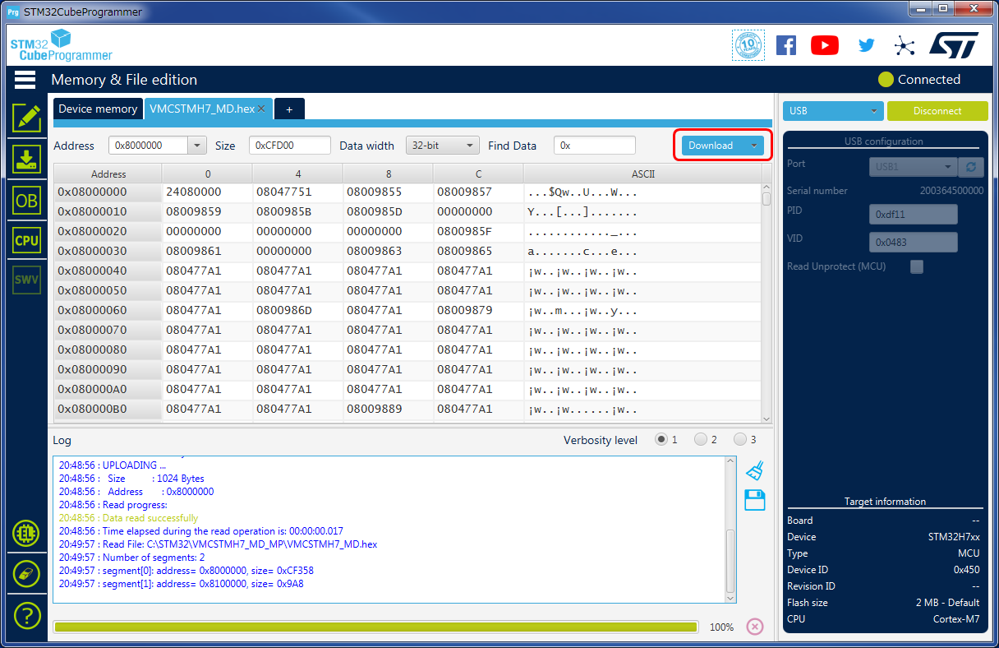

ダウンロードについて
VMCのファームウェアを変更するにはPCからUSB経由でファームウェアをダウンロードする必要があります。
ダウンロード用ソフトウェアのインストール
まず、PCにダウンロード用ソフトウェアをインストールする必要があります。
以下のサイトからソフトウェア入手で、ご自身のPCに合ったソフトウェアをダウンロードしてください。
STM32CubeProgrammer
登録を要求されますが、ダウンロードのみならばフォームに名前とメールアドレスを入れれば、
メールにダウンロード用のリンクが送信されますので、そこからダウンロードしてください。
VMCをダウンロードモードにする
VMCに電源が入っている場合は一度電源をOFFしてください。
システムボタンを押しながらUSBをPCに挿してください。
緑のLEDが点灯し、青LEDやオレンジLEDが点灯していなければダウンロードモードに入っています。
この状態になればシステムボタンをこれ以上押さなくても大丈夫です。
STMCubeProgrammerの起動
USBを選んで、PIDとVIDが以下のように認識されていればOKです。
Connectボタンを押して、右上がConnectedに変わればOKです。
ダウンロード
Open fileを押すとファイル選択のダイアログが開きますので、ダウンロードしたいファームウェア(hexファイル)を選びます。
Downloadボタンが押せるようになりますので、押すとDownloadが開始されます。

File Download Completeのダイアログが出たら完了です。
USBを抜いて電源ボタンを8秒押して強制的に電源OFFしてから、もう一度電源を入れると新しいファームウェアで起動します。